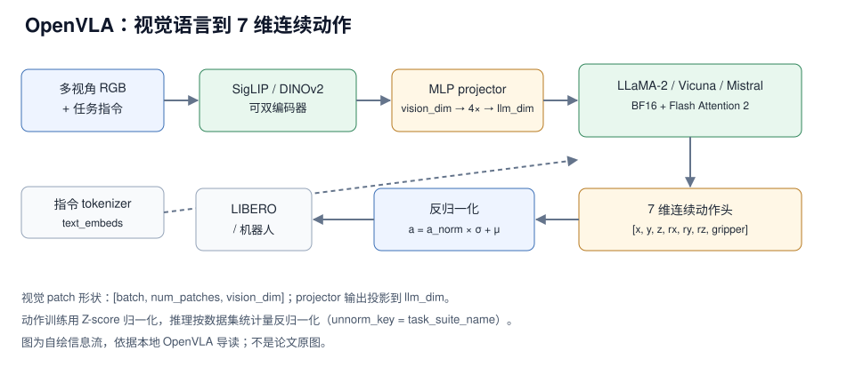

OpenVLA 的本地复现链路可以概括为：openvla-7b 权重 + 224×224 RGB 输入 + MLP projector + LLaMA-2/Vicuna/Mistral 主干 + 7 维连续动作头，配合 --center_crop True 在 LIBERO 上评测。章节记录的关键数字有五个：权重仓库名带 7b、动作 7 维、图像输入 224×224、单次评测显存约 10321M（约 10.3GB）、checkpoint 分 4 个 shard 加载；此外评测默认每任务 50 trials。章节没有给四个 suite 的完整成功率，也没有给训练配方。
说明：本文按 paper-deep-read 结构整理，唯一事实来源是本仓库 OpenVLA 导读（下称“本章程”）。口径分两种：章节记录＝章节给出的命令、日志、截图与显存数字；章节转述＝章节对架构的文字说明，未标论文出处。由于章节没有引用论文，本文无法区分“论文作者报告”与“章节作者转述”，凡架构描述一律记为“章节转述”。整理日期 2026-11-01；章节未给论文版本与代码 commit，本文不虚构。
1. 论文与官方资源
| 资源 | 网页来源 | 说明 |
|---|---|---|
| 论文 | arXiv:2406.09246 | 公开入口* |
| 源码 | github.com/openvla/openvla | 章节命令中的官方仓库；另有 bgithub.xyz 镜像 |
| 权重 | openvla/openvla-7b；微调版 openvla-7b-finetuned-libero-{spatial,object,goal,10} | 章节记录 |
| 项目页 | openvla.github.io | 公开入口* |
* 公开入口未在本地章节核验；本地章节只用于事实核对。许可与再分发条款需自行确认。
论文：OpenVLA（章节写作 Open Vision-Language-Action）；arXiv：2406.09246（公开入口，未在本地章节核验）；版本：本地导读整理；代码 commit：章节未给。版本提示：本章程是按作者本机环境写的一次复现记录（Ubuntu 系、/data1 与 /home/vipuser/... 等本机路径），不是论文的官方版本说明。不同 CUDA / PyTorch / LIBERO 版本可能需要重新排错；引用本文数字时请带上“本地章节记录”这个口径。
2. 核心问题：把 VLM 的表征接到 7 维连续动作
本章程给出的取舍是：视觉与语言仍由通用 VLM 处理，动作交给一个输出 7 维连续向量的头；训练时回归归一化动作，推理时按数据集统计量反归一化。章节没有描述动作 token 化或动作词表，动作走的是连续回归路径，而不是文本生成路径。

图 1：OpenVLA 的视觉语言到 7 维连续动作信息流。自绘，依据本地导读；不是论文原图。
对比：本章程没有与 RT-2 或其他模型做定量对照，只描述 OpenVLA 的结构；需要“文本 token vs 连续动作头”的路线对照时见 RT-2 精读，本文不搬用其数字。
- 保留了什么：通用 VLM 的视觉编码器、projector、LLM 主干与跨模态自注意力（章节转述）。
- 简化与代价：动作侧只有一个 7 维输出头与一次反归一化，接口窄、便于接 LIBERO；但章节没有对照实验，无法量化收益，动作精度与控制频率都要实测（§6）。
- 读者该学什么：先用一个 suite 跑通“权重 → 加载 → rollout → success 记录”，再谈扩展；跳过结果汇总只是“能跑”，不是“能复现”。
3. 模型结构与张量流
3.1 组件与维度
| 组件 | 章节给出的设置 | 维度/形状 | 口径 |
|---|---|---|---|
| 图像输入 | RGB，resize 至 224×224 | 224×224 | 章节转述 |
| 视觉骨干 | SigLIP / DINOv2 / CLIP；支持双编码器（如 DINOv2 + CLIP） | — | 章节转述 |
| patch 输出 | 视觉骨干输出图像 patch embeddings | [batch, num_patches, vision_dim] | 章节转述 |
| projector fc1 | MLP 第一层（双编码器示例结构） | vision_dim → 4×vision_dim | 章节转述 |
| projector fc2 | MLP 第二层 | 4×vision_dim → llm_dim | 章节转述 |
| projector fc3 | MLP 第三层 | llm_dim → llm_dim | 章节转述 |
| LLM 主干 | LLaMA-2 / Vicuna / Mistral | — | 章节转述 |
| 精度与注意力 | BF16、Flash Attention 2 | — | 章节转述 |
| 动作头 | 7 维连续动作 | [x, y, z, rx, ry, rz, gripper] | 章节转述 |
vision_dim 与 llm_dim 的具体数值章节未给；fc1–fc3 是章节为“双视觉编码器”给出的示例结构，不能当成所有配置的唯一实现。章节对双编码器的解释是：DINOv2 偏空间几何，CLIP 偏语义对齐。
3.2 动作头与 Z-Score 归一化
章节说模型预测的是归一化动作，推理时用数据集统计信息反归一化。公式就是标准 Z-Score 与其逆变换：
$$
\text{normalized\_action} = \frac{\text{action} - \mu}{\sigma},
\qquad
\text{action} = \text{normalized\_action} \times \sigma + \mu
$$
μ 与 σ 来自训练数据的动作统计量；章节把取统计量的键写成 unnorm_key=task_suite_name，即按 suite 取对应的一套统计量。所以评测时 suite 名与 unnorm_key 必须一致，否则动作幅度会整体偏移。
读代码时看三件事：统计量文件从哪里加载、旋转分量 rx, ry, rz 用的是什么旋转表示、动作头接的是 LLM 的哪一层输出。章节只给了维度与归一化，没有给旋转表示与接入层。
3.3 多模态序列布局与训练数据流
章节给出的拼接写法是一行伪代码：input_embeds = [text_embeds[:prefix], projected_vision, text_embeds[prefix:]]。视觉 token 插在“指令之前或之中”，位置由 prefix 决定。
- 输入表示：Tokenizer 把 prompt 转成 token IDs；图像 resize 224×224 后经视觉骨干与 projector，从
[num_patches, vision_dim]变为[num_patches, llm_dim]。 - 交互与掩码：自注意力让文本 token 与视觉 patch 互相可见，causal mask 保持自回归、防止信息泄露。
- 数据与增强：标签是专家演示轨迹的 7 维动作向量；训练用 random crop + color jitter，推理用 center crop。
训练与推理的裁剪策略不同，这是复现时最容易漏掉的一致性假设；动作标签直接取自演示轨迹，章节没有描述额外的动作重标注。
4. 实验结果
4.1 LIBERO 评测协议
LIBERO 在章节里的定位是：基于 RoboSuite + MuJoCo 的标准化评测流程，按任务套件逐个跑。
| 项目 | 章节记录 | 说明 |
|---|---|---|
| 任务套件 | libero_spatial、libero_object、libero_goal、libero_10 | 对应 4 个 finetuned 权重 |
| 每任务 trials | 默认 50 | --num_trials_per_task 可改，章节示例改为 10 |
| 任务数 | libero_spatial 10 个任务 | 章节伪代码注释；其余 suite 未给 |
| 初始状态 | env.set_init_state(initial_states[episode]) | 固定初始状态，保证公平 |
| 图像预处理 | center crop | --center_crop True |
| prompt 模板 | What action should the robot take to {task_description}? | 章节伪代码 |
| 反归一化键 | unnorm_key=task_suite_name | 按 suite 取统计量 |
| 终止条件 | done 或 max_steps | 章节伪代码 |
评估循环是“任务 → episode → step”三层：每个 episode 先 env.reset()、设初始状态，然后在 max_steps 内反复取 RGB、拼 prompt、调 predict_action、env.step，done 就跳出。这个结构决定了：要得到 suite 成功率，必须统计所有 episode，而不是看一条日志。
4.2 章节记录的一次实际评测
| 观测项 | 章节记录 | 口径 |
|---|---|---|
| checkpoint 分片 | 4/4，约 3.16 it/s | 加载日志 |
| 模型类 | transformers_modules.openvla...OpenVLAForActionPrediction | 加载日志 |
| 单条结果 | Success: True | 单个 episode，不代表 suite 成功率 |
| 显存 | 约 10321M | 章节截图记录 |
Loading checkpoint shards: 100%|██████████| 4/4 [00:01<00:00, 3.16it/s] Loaded model: <class 'transformers_modules.openvla...OpenVLAForActionPrediction'> Task: pick up the black bowl between the plate and the ramekin and place it on the plate Saved rollout MP4 at path ./rollouts/...--success=True--task=....mp4 Success: True
读法：Success: True 只说明这一条 rollout 成功，不能外推成 suite 成功率；3.16 it/s 是分片加载速率，不是推理帧率。四个 suite 必须分别跑完并各自汇总 success/total，不同 trials 设置的结果不能放在同一张表里比较。
来源：本章程 §3–§4（评估命令、日志与显存截图）。
5. 消融实验
本章程以环境、评估与原理为主，没有消融表，也没有给任何对照数字。从章节的结构描述里可以提出三组值得做的对照，每组都只能用同一套评测协议自测：
- 单编码器 vs 双编码器：章节支持 SigLIP / DINOv2 / CLIP，并给出 DINOv2 + CLIP 示例（空间几何 + 语义对齐）。测同 suite 成功率、视觉 token 数、显存与吞吐。
- projector 宽度与 LLM 主干：示例投影是
vision_dim → 4× → llm_dim → llm_dim，主干可选 LLaMA-2 / Vicuna / Mistral；分别测 4× 扩张是否必要、换更窄投影或换主干后的成功率与延迟。 - 裁剪与归一化一致性：训练 random crop、推理 center crop；统计量按
unnorm_key取。测裁剪不一致、suite 与统计量错配时成功率与动作幅度的变化。
前两组直接改变视觉 token 数量与显存，第三组主要影响可复现性；做消融时先把评测协议固定住，否则成功率差异无法归因。
6. 延迟与显存怎么读
章节只给了一个显存数字。下表把“能用于选型”和“不能用于选型”的信息分开：
| 项目 | 章节记录 | 能否用于部署选型 |
|---|---|---|
| 推理显存（LIBERO 评测） | 约 10321M | 可以，说明单卡可跑 |
| GPU 型号 | 章节未给 | 不能 |
| 单步推理延迟 | 章节未给 | 不能 |
| 端到端请求延迟 | 章节未给 | 不能 |
| 测量协议（热身/重复/中位数） | 章节未给 | 不能 |
| 重规划间隔 / 控制频率 | 章节未给 | 不能 |
结论：10321M 只回答“单卡能不能装下”，回答不了“能不能进控制回路”。1000 / 延迟 算的是策略调用频率上限，不等于动作执行频率，也不等于端到端反馈频率；章节没有给重规划间隔，连调用频率都算不出来。要做部署判断，必须用自己的输入分辨率、batch 与精度重测，并分开记录裸模型延迟、含前后处理的请求延迟、两次重规划之间的间隔。
7. 训练资源与卡数
本章程定位是“环境 + 评估 + 原理”，不含训练配方：没有 GPU 数、优化器步数、batch、学习率、warmup、数据配比，也没有说明是否做参数高效微调（章节全文未出现 LoRA）。与训练相关、可确认的事实只有三条：
- 仓库提供 4 个按 suite 微调的权重（
-spatial/-object/-goal/-10），说明存在按 suite 分别产出的微调结果。 - 推理栈用 BF16 + Flash Attention 2，章节把
flash-attn锁在2.5.5。 - CUDA Toolkit 11.8 是章节给出的可选安装项（
mamba install -c nvidia cuda-toolkit=11.8）。
三级复现的边界要写清楚：
- 理解与评测：加载公开 checkpoint，跑一个 suite——本章程覆盖的就是这一级（§9）。
- 训练链路：少量数据、小 microbatch，验证损失、梯度与保存——章节未给入口，需按仓库 README 自行核对。
- 完整训练：保持采样、有效 batch、步数与评测协议——章节未给配方，不能在缺配方时声称复现了论文训练。
8. 代码阅读顺序
官方仓库为 openvla/openvla。章节只显式给出了评测入口 experiments/robot/libero/run_libero_eval.py，以及日志里的模型类名 OpenVLAForActionPrediction；其余文件路径章节未给，下表按模块列出阅读顺序，具体路径需按固定 commit 核对。
| 模块 | 阅读重点 | 路径状态 |
|---|---|---|
| 评测入口 | --task_suite_name、--num_trials_per_task、--center_crop、--pretrained_checkpoint 如何被消费 | 章节给出 experiments/robot/libero/run_libero_eval.py |
| 模型类与加载 | 视觉 → projector → LLM → 动作头；predict_action 入参；dtype、Flash Attention、分片加载 | 类名来自日志，文件路径需核对 |
| 视觉编码 | 224×224 输入、单/双编码器分支、patch 数与 vision_dim | 需核对 |
| projector | fc1/fc2/fc3 的维度与激活 | 需核对 |
| 动作头 | 7 维输出、归一化/反归一化、统计量加载 | 需核对 |
| LIBERO 适配 | init states 加载、unnorm_key 与 suite 的映射 | 第三方 LIBERO 路径见 §9.5 |
已知坑：
- LIBERO 初始化状态文件含 numpy 对象，新版 PyTorch 的
torch.load默认weights_only=True会拦下，需要改加载代码（§9.5）。 - EGL Context Error 出现在 Robosuite/MuJoCo 销毁渲染上下文时，章节明确说不影响评估结果，可以忽略。
- 章节用的是作者本机路径（
/data1、/home/vipuser/17robo/openvla、/data/17robo/LIBERO/...），照抄会失败，必须替换。 - 章节未固定 commit；不同 commit 的权重命名与接口可能不同，先固定再谈复现。
9. 从 checkpoint 开始复现
以下命令与参数全部来自本章程 §2–§3，章节作者在其环境跑通；本文整理时未复跑（未在本机验证）。/data1、/home/vipuser/... 是作者本机路径，按自己的目录替换。
9.1 环境与依赖
sudo apt install nvidia-cuda-toolkit # 系统依赖（Ubuntu 系） git clone https://github.com/openvla/openvla.git git clone https://bgithub.xyz/openvla/openvla.git # 章节给出的镜像 git clone https://huggingface.co/openvla/openvla-7b cd openvla pip install -e . # 需访问 github.com，否则报 443 pip install packaging ninja ninja --version; echo $? # 期望退出码 0 pip install "flash-attn==2.5.5" --no-build-isolation # 可选：用 mamba 装 CUDA Toolkit mamba install -c nvidia cuda-toolkit=11.8 mamba activate dl && nvcc -V
9.2 下载四个微调权重
tmux new-session -d -s openvla_download tmux split-window -h && tmux split-window -v && tmux select-pane -t 0 && tmux split-window -v tmux send-keys -t 0 'cd /data1 && git lfs clone https://huggingface.co/openvla/openvla-7b-finetuned-libero-spatial' Enter tmux send-keys -t 1 'cd /data1 && git lfs clone https://huggingface.co/openvla/openvla-7b-finetuned-libero-object' Enter tmux send-keys -t 2 'cd /data1 && git lfs clone https://huggingface.co/openvla/openvla-7b-finetuned-libero-goal' Enter tmux send-keys -t 3 'cd /data1 && git lfs clone https://huggingface.co/openvla/openvla-7b-finetuned-libero-10' Enter tmux attach-session -t openvla_download
9.3 先做加载检查
章节没有单独的 dry-run 命令；用一次缩小 trials 的评测代替（--num_trials_per_task 10 是章节给出的示例值）：
python experiments/robot/libero/run_libero_eval.py \
--model_family openvla \
--pretrained_checkpoint /data1/openvla-7b-finetuned-libero-spatial \
--task_suite_name libero_spatial \
--center_crop True \
--num_trials_per_task 10
加载成功的标志：日志出现 4/4 分片、OpenVLAForActionPrediction 类名、任务描述与 Starting episode 1...，显存约 10321M。若停在分片加载，先查权重是否用 LFS 完整拉取。
9.4 评测一个 suite
python experiments/robot/libero/run_libero_eval.py \
--model_family openvla \
--pretrained_checkpoint /data1/openvla-7b-finetuned-libero-spatial \
--task_suite_name libero_spatial \
--center_crop True
换 suite 时同步替换 --pretrained_checkpoint 与 --task_suite_name（章节原命令给了 libero_spatial 与 libero_goal 两例）。默认 num_trials_per_task 为 50。章节只显式给了这两个 suite 参数值；libero_object / libero_10 的取值按权重命名推断为同形下划线写法，需用 --help 或源码确认。
9.5 已知兼容性修复
（1）LIBERO 的 torch.load pickle 错误。 报错形如 Weights only load failed / Unsupported global: GLOBAL numpy.core.multiarray._reconstruct。原因是新版 PyTorch 的 torch.load 默认 weights_only=True，而 LIBERO 初始化状态文件含 numpy 对象。章节记录的修改位置是作者本机的 <LIBERO 根>/libero/libero/benchmark/__init__.py（约第 164 行）：
init_states = torch.load(init_states_path) # 原 init_states = torch.load(init_states_path, weights_only=False) # 改法一 # 改法二（需 PyTorch 支持）：torch.serialization.add_safe_globals([np.core.multiarray._reconstruct]) # 之后再执行 init_states = torch.load(init_states_path)
（2）EGL Context Error。 报错含 EGLError(err = EGL_NOT_INITIALIZED, ...)，出现在 Robosuite/MuJoCo 销毁渲染上下文时，章节明确说不影响评估流程与结果生成，可忽略。
（3）路径与 trials 一致性。 四个 suite 分别跑完后各自汇总，不要混用不同 num_trials_per_task 的结果；每套都要记录 success/total，不要只留一条 Success: True 的 rollout。
10. 如何用到自己的项目
OpenVLA 在本仓库里的价值是：一条公开权重、能跑通的 LIBERO 评测链路，适合当复现基线与对照项，而不是终局部署方案——章节没有延迟与控制频率数据，无法判断它能否进控制回路。
| 方向 | 加什么 | 测什么 | 代价/前提 |
|---|---|---|---|
| 固定评测协议 | 把 suite / 50 trials / center crop / unnorm_key 固化成脚本参数 | 四个 suite 的 success/total 基线 | 总 rollout 数为 4 个 suite 的任务数 × 50，需预留完整评测时间 |
| 动作接口替换 | 把 7 维回归头换成 flow / RVQ 等其他动作接口 | 成功率、显存、延迟 | 章节未给训练代码与数据格式，需先核对仓库 |
| 双视觉编码器 | 启用 DINOv2 + CLIP 双分支 | 同 suite 成功率、视觉 token 数、显存 | projector 有 4× 扩张；第二路视觉特征的显存与吞吐需实测 |
| 部署前测量 | 记录裸模型延迟、请求延迟、重规划间隔 | 能否满足目标控制频率 | 必须本机实测，章节只给显存 |
相关章节：RT-2、Galaxea G0.5、OpenVLA 导读、01 技术专题。